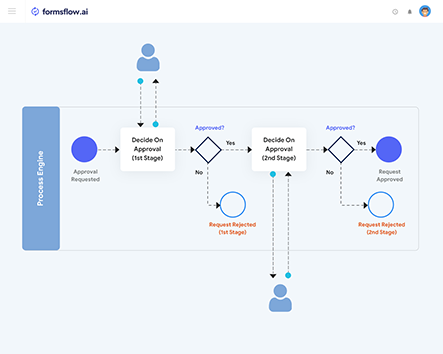

<article class="docs-article" id="section-1">
    <section>
        <div>
            <header class="docs-header">
                <h1 class="docs-heading">Introduction <span class="docs-time">Last updated: 2022-06-07</span>
                </h1>
            </header>
            <hr>

            <p>
            <p>Welcome to formsflow.ai</p>

            <p>Formsflow.ai is developed by AOT Technologies.

                We are on a mission to empower our clients to serve people better.

                By building intelligent systems and leveraging our expertise in integration and
                analytics, we are able to make an impact on the world alongside our clients. Our purpose
                is to use technology and our expertise to build systems that benefit society.
            </p>
            <p>This framework integrates selected open source products for Forms, Workflow, Analytics,
                and Security to provide a seamless solution as a viable alternative to expensive
                enterprise software products.</p>
            <p>
                <br><br>
            <p>
                This project was initiated by AOT Technologies to address general-purpose end to end
                business process problems. It provides a user interface for a customer to fill and
                submit a service request form to the service provider. Service provider employees get a
                user interface through which they can process this service request. It also allows the
                service provider employees to generate reports.
            </p>

            <iframe width="560" height="315" src="https://www.youtube.com/embed/Gq24xjzP5l8"
                title="YouTube video player" frameborder="0"
                allow="accelerometer; autoplay; clipboard-write; encrypted-media; gyroscope; picture-in-picture"
                allowfullscreen></iframe>
            </p>
            <a href="https://www.aot-technologies.com">For more informations visit</a>
            <br><br>
            <hr>
            <h2 id="how-it-works">How it Works</h2>
            <p>It starts with an open source dynamic form builder, a drag-and-drop user interface tool
                that allows you to create functional front-end web forms. You can easily configure the
                rules and business processes that should be triggered when the form is submitted by the user.
                Then, you&#39;ll set up the back-end, using formsflow.
                <br>
                <br>
                
            </p>
            <br><br>
           <br>

            
        </div>
    </section>

</article>